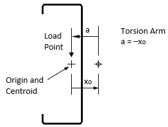
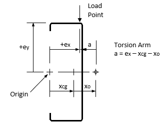

If the Torsion option is chosen on the General tab of the Analysis Inputs window, transverse loads (distributed and concentrated) produce torque on the members based on the eccentricity of the loads relative to the shear center. The members are restrained by the torsional supports defined in the analysis.
By default, a section containing one part has its Centroid located at the Origin. And by default, transverse loads are applied at the Origin. So the torsion arm (a) is simply –xo for vertical loads.

To specify a different load point, enter the eccentricities ex and ey on the Members tab of the Analysis Inputs window. If the section Centroid is not located at the Origin, or the load is not applied at the Origin, the torsion arm (a) is calculated as shown here for the general case.

| T | Applied torsional load = P·a |
| P | Applied transverse load; for gravity load, P is negative (down) |
| a | Torsion arm; for vertical loads, a = ex – xcg – xo |
| ex, ey | Eccentricity of the Load Point relative to the section Origin (input) |
| xcg, ycg | Location of the section Centroid relative to the section Origin (input) |
| xo, yo | Location of the Shear Center relative to the section Centroid (calculated) |
If two or more beams overlap, the torsion arm is determined as a weighted average based on the relative torsional stiffness of the members. For beam self-weight, the load is applied at the centroid so the torsion arm is –xo. If transverse loads are not vertical, the horizontal component of the loads use the Y offset between load point and shear center, which may increase or decrease the applied torque.
Note: if the analysis involves both axial and torsional loads at different load points on the member, run the analysis twice: 1) with torsion without axial loads, and 2) with axial loads without torsion.
Reactions to transverse loads at translational supports could apply torque to the member. These supports (X or Y) typically include a twisting restraint (T), for which the torque is determined as a torsional reaction. If the support does not include a twisting restraint, the support force is assumed to act at the shear center, and therefore does not impart any torque on the member.
Concentrated moments, if applied with an offset from the shear center, will produce concentrated bimoments. Likewise, axial loads which are offset from the centroid will produce concentrated moments, which in turn may produce concentrated bimoments.
The applied torque and the resulting twist of the member is primarily restrained by twisting (T) supports. But other support types influence the torsional behavior as well. Here is a summary of the supports and their torsional restraint.
| T | Twisting restrained, warping free (torsionally pinned) |
| RxRy | Flexural rotation fixed about both X and Y axes; this also restrains warping (twisting free) |
| TRxRy | Twisting and warping restrained (torsionally fixed) |
| Hx or Hy | Hinge supports release flexural rotation about X or Y axis; either hinge releases warping |
| T with K=0 | Segment fully braced against twisting, no twisting or torsional stresses occur |
| Braced Flange | For members defined with a continuously braced flange, no twisting or torsional stresses occur |
Note: a continuously braced flange can significantly reduce torsional stresses, but does not typically eliminate them. The CFS assumption that a braced flange restrains torsion could be unconservative. A more rigorous analysis may be required to accurately determine the torsional stresses for this case.
The solution to a torsion problem may involve three different cases: warping only (GJ<<ECw/L²), pure torsion only (ECw/L²<<GJ), and combined warping and pure torsion. Analyses with different sections could involve all three in the same solution. Equilibrium is ensured using the following assumptions:
Where a member crosses a twisting restraint (T support), the angle of twist is zero, a reaction torque occurs at the restraint, and continuity is maintained for the first and second derivative of the twisting displacement curve. A section with no warping is a special case where this continuity is not required and does not occur.
If two or more members overlap, the combined torsional stiffness components (GJ and ECw) are the sum of the stiffness components for each lapped member. This assumes the members rotate together by the same twist angle, but with no composite action (no torsional shear transfer between members). For member checks at locations with two or more members, the bimoment applied to each member is proportioned using the relative warping stiffnesses (ECw).
Warping continuity (bimoment and warping displacement) is maintained where the same cross-section is continuous. If the analysis members abruptly switch from one section to another, warping continuity is not maintained.
See also Torsion Diagrams and Torsion Design.